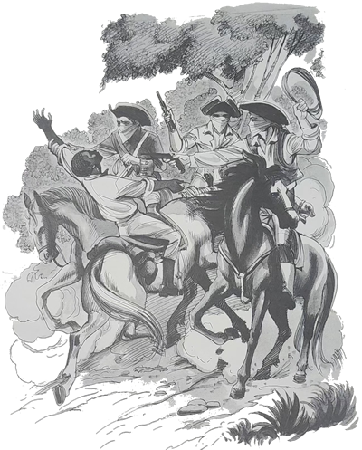
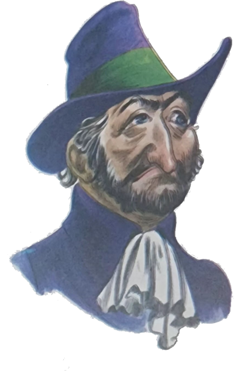
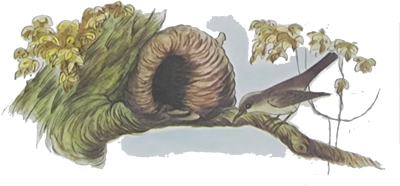
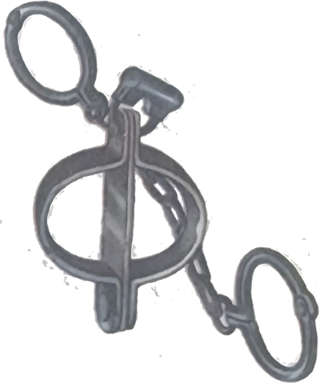
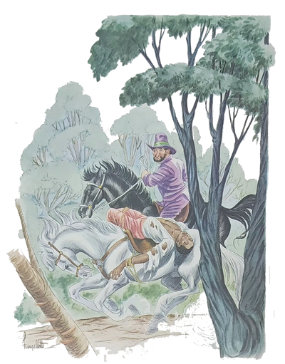
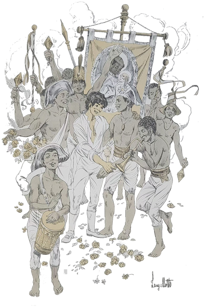
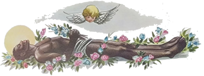
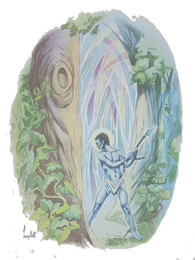

Nossos amigos deixaram a fazenda e continuaram a viagem. Estão agora hospedados num sítio muito bonito, onde o que mais impressionava é a grande quantidade de pássaros. A manhã é anunciada por uma sinfonia de cantos maravilhosos e não há quem, não acorde com um sorriso de satisfação.
O Arrelia e as crianças passeavam pelo campo quando alguma coisa no alto de uma árvore chamou a atenção de Marisa:
- Olhem que engraçado! Quam terá feito aquilo?
Todos procuraram ver o que era. O Arrelia deu risada e disse:
- Aquilo é a casinha do nosso Famoso joão-de-barro. Um dos pássaros mais “simpáuticos” que já vi. Vamos mais perto. A casinha dele merece ser admirada.
Aproximaram-se enquanto o Arrelia explicava:
- Ele a constrói com barro e palha. Olhem que “trabaulho”!
As crianças não esconderam seu interesse Diante do curioso achado. Os meninos chegaram a demonstrar vontade de subir na árvore em que o ninho se encontrava mas o Arrelia não os deixou:
- Para que incomodá-lo? Ele não está incomodando ninguém! E é capaz que não se encontre em casa.
Assim que o Arrelia acabou de falar, o joão-de-barro saiu do ninho e pousou num dos galhos da árvore.
- É ele! É ele! – gritou Sérgio, logo seguido pelas outras crianças.
Depois de alguns instantes o joão-de-barro voou para longe.
- Decerto foi buscar barro para fazer algum concerto na casa. É tão trabalhador . . .

Nossos amigos continuaram a passear pelo campo. Encontraram uma grande porteira fechando o caminho. Iberê correu a abri-la e ouviu-se um ranger longo, característico.
- Êta porteira velha! – exclamou o Arrelia. Está-nos cumprimentando? Boa-tarde!
Virou-se para as crianças e comentou:
- A porteira também é uma das coisas que acho mais “simpáuticas”. Não se pode imaginar um sítio, uma fazenda sem uma porteira.
Passaram todos, Iberê fechou-a, ela rangeu novamente, e o Arrelia gritou:
- Até logo! Passe bem!
Depois de mais algum tempo de caminhada, voltaram, por outro caminho, à casa do sítio.
- Que pena! – disse o Arrelia. Eu queria voltar pelo mesmo lugar para ver outra vez a porteira velha e ouvir novamente a sua voz . . .
De volta a casa, não perderam tempo e foram Jantar. Era um virado de trazer água na boca.

Mais tarde, noite fechada, sentaram-se no terraço “para fazer a digestão”, conforme dissera o Arrelia. A família do sitiante também ali estava. De longe, bem longe, começou a chegar um barulho cadenciado, semelhante ao som de machadadas numa árvore. O Arrelia apurou o ouvido e exclamou:
- Quem será o louco que resolveu cortar lenha a esta hora? Por certo não comeu um virado como nós comemos. Não tenho coragem de levantar nem minha “bengaula”! Imaginem um machado!
- Não são machadadas, não – disse o sitiante. Ou melhor: são machadadas, porém dadas por um fantasma, um escravo. Aqui não há quem não conheça a estória.
- Para mim – respondeu o Arrelia – trata-se de algum maníaco. Ou então alguém que aproveita a noite para roubar lenha.
- Não, não é – insistiu o sitiante. É o escravo. Vou contar a estória para ver como é verdade.
Após um longo silêncio, como para lembrar-se do que ia contar, o sitiante iniciou a estória:
- No tempo da escravidão, este sítio fazia parte de uma grande fazenda que pertencia a um barão, homem cheio de dinheiro, dono de muitos escravos. Era homem malvado e tinha os escravos mais para judiar deles do que outra coisa. Não tem conta as perversidades que ele praticou. Um de seus escravos, um moço de uns vinte anos, era o único que escapava aos terríveis castigos do barão, e isto porque, sendo o escravo esperto e inteligente, era utilizado pelo seu senhor para serviços pessoais: ia à cidade buscar encomendas, acompanhava o patrão quando ele caçava . . . Uma vez o barão chamou o moço, cujo nome era José:
- Olhe, quero que vá à cidade buscar uma encomenda. Mas tome todo o cuidado porque é coisa importante. Trata-se de ouro, entende? Volte o mais depressa possível.
O escravo arregalou os olhos ao perceber a importância do que ia fazer e garantiu ao seu senhor:
- Pode ficar descansado. Farei tudo direitinho.
O barão disse o endereço e José partiu a cavalo. Como não era perto a cidade aonde ele ia, teve de viajar horas e horas e chegou lá mais morto do que vivo. Estava ansioso, porém, para cumprir as ordens do patrão e não descansou um minuto. Apanhou a encomenda, montou outra vez a cavalo e começou a viagem de volta.
Já estava na metade do caminho quando foi cercado por uma porção de cavaleiros, todos mascarados. Era um assalto. José tentou lutar mas nem pode levantar o braço e já estava no chão, desacordado por uma pancada de um dos assaltantes. Quando acordou, não havia mais ninguém, e o ouro tinha sumido.
Já imaginaram o desespero dele? Começou a andar por ali, na esperança de encontrar os bandidos. Nem sinal. O que ia fazer? Conhecia de sobra o gênio de seu senhor e sabia do que ele era capaz quando não estava contente com um escravo. O pobre moço queria voltar mas não sentia coragem. Tremia e suava só de pensar no barão.

A noite vinha perto. As aves passavam aos bancos, apressadas, em busca de seus lugares de dormir. José pensou: “Ah se eu pudesse voar como essas aves . . . São livres! E eu? O que será de mim? Meu senhor não acreditará que fui roubado! Vai dizer que fui eu e serei castigado!”
A noite chegou, e José continuava sem coragem de voltar. Sentou-se no chão e ali ficou, pensativo, sem se preocupar com as onças. Era melhor ser comigo por elas.
Na fazenda, o barão estava meio louco, Andava para cá, para lá, gritava com os escravos, resmungava . . . O que havia acontecido com o seu rico ouro? Por que havia confiado em José? Tinha fugido, é claro.
Passou a noite inteira naquela ansiedade. Mal começou a amanhecer, ele e alguns homens da fazenda montaram a cavalo e saíram à procura de José. A primeira coisa a fazer era verificar se José havia retirado o ouro, e seguiram a galope para a cidade. No caminho deram com o pobre escravo ainda sentado no chão, alheio a tudo. O barão pulou do cavalo ainda em movimento e começou a sacudir o escravo e a gritar:
- O que você está fazendo aqui? O que aconteceu? Onde está o meu ouro: Diga logo ou morre aqui mesmo! Diga depressa!
Começando a tremer e a suar outra vez, José contou o que havia acontecido. Não foi fácil compreender o que ele dizia, pois gaguejava de pavor. O barão não acreditou numa só palavra do coitado:
- Mentiroso! Roubou o meu ouro e ainda vem com essa conversa! Diga a verdade! Vamos! Diga onde ele está escondido!
- Sinhôzinho! Acredite em mim! Não fiz nada de mal! Não tive culpa! Eu era um só e eles eram muitos!
O barão não se conformou e disse aos outros homens:
- Vejam a coragem desse traidor! Desse ingrato! Confiei nele e olhem o que ganhei! Mas vai ver só! Na certa escondeu o ouro em algum lugar da mata e inventou essa estória pensando que me tapeava.
Enganou-se! Vai contar, já, já!
Como José insistisse na mesma estória, que era verdadeira, levou logo uns safanões e algumas chicotadas do barão. Os outros homens só esperavam isto. Caíram em cima do infeliz aos socos e pontapés. Foi preciso que o barão dissesse:
- Esperem! Parem senão o bandido morre sem confessar onde escondeu o ouro. Primeiro vai ter de falar!
Em seguida mandou que amarrassem o escravo. Quando viu que ele mal podia respirar, tão enleado estava, ordenou:
- Agora joguem esse danado em cima do cavalo e vamos embora.
Assim foi Feito. Com a cabeça caindo de um lado e os pés de outro, José foi trazido para a fazenda. Sofreu novo interrogatório. Continuou a dizer a verdade e levou outra surra. O barão não sabia mais o que falar de tanto ódio.
- “Coitaudo” do José – interrompeu o Arrelia, batendo com a bengala na grade do terraço. Isso é coisa que se “fauça”? Então ninguém viu que ele estava dizendo a verdade? Ah se eu estivesse lá!
Todos ficaram surpresos com a reação do Arrelia. O sitiante brincou:
- O senhor é muito valente! Puxa!
- O senhor não faz ideia – disse Jaci. Com essa bengala nem as onças brincam.
- Que sorte teve o barão – considerou o sitiante. Olhe que uma pancada desse poste . . .
O Arrelia não gostou da comparação:
- Ficou louco da “viuda” quando caçoam da minha “bengaula”!
- É melhor o senhor pedir desculpas – aconselhou Jaci ao sitiante. Ele costuma ter ataques de fúria quando alguém brinca com sua bengala, e dá bordoadas em quem esteja mais perto.
- É mesmo? – perguntou o sitiante, meio desconfiado, ao Arrelia.
- Imagine! – exclamou o Arrelia. É brincadeira dessa fofoqueira. Mas escute! Ainda não pararam as tais pancadas. Estão derrubando todas as árvores!

- Não, não estão! – respondeu o sitiante. É o fantasma do escravo. O machado dele faz esse barulho mas não corta nada.
- O senhor ainda não terminou a estória – lembrou Carlinhos. O que aconteceu ao escravo?
- O barão queria que ele dissesse de qualquer modo onde havia escondido o ouro – continuou o sitiante. Como o pobre não sabia, pois tinha sido assaltado, de nada adiantaram as chicotadas que o barão e os outros deram nele. O barão, bufando e praguejando, disse a José que ou falava ou ia passar uma semana a pão e água.
- Falar o quê, patrãozinho? Eu já disse tudo o que sabia! – gritou o escravo.
Não adiantou. Lá foi ele para uma prisão escura, onde passou uma semana. Novamente o barão fez as mesmas perguntas, e novamente José deu as mesmas respostas.
- Está certo. Você é teimoso, não é mesmo? – considerou o barão. Mas vai aprender. Arranjei um trabalho que logo deixará você bem mansinho.
Aí o barão esclareceu que José ia ter de cortar lenha.
- Até que não era tão ruim – considerou o Arrelia.
- É? Espere até saber em que condições – pediu o sitiante e explicou:
- O barão mandou por correntes nos pés do escravo para que não escapasse, e disse-lhe que ia ter de cortar lenha do amanhecer até que ficasse escuro. Só podia parar cinco minutos por dia para comer um pedaço de pão e tomar um pouco de água. Fora disto, cada vez que parasse de cortar levava umas chicotadas.
No dia seguinte começou o suplício. Bastava parar um pouco [ara respirar e o chicote cantava. O tempo foi passando. José foi-se esgotando pouco a pouco. Cada vez as pancadas ficavam mais espaçadas e as chicotadas ficavam menos. Depois de alguns dias foi procurado pelo barão. Ele surpreendeu-se com o aspecto do escravo. Não parecia mais aquele moço forte e decidido. Dava a impressão de que suas forças estavam no fim.
- Já resolveu contar onde escondeu o ouro? – perguntou-lhe o senhor. Olhe que não vai aguentar muito, não.
- O quem ais vou contar? Falei tudo o que sabia! Não sei de mais nada! – disse José. Acredite em mim, sinhozinho!
- Bem, se não está contente ainda, paciência – respondeu o barão. Tempo não falta. É só esperar.
- É judiação o que está fazendo! – gritou o escravo. Não toquei naquele ouro! Ainda vai-se arrepender disso!
O barão não gostou e deu umas chicotadas no escravo:
- Será possível? Como pode ameaçar-me? Espere um pouco! – e mandou que o castigo fosse aplicado com mais violência.
José foi-se esgotando cada vez mais. Quem era capaz de aguentar aquele regime de trabalho comendo um pedaço de pão e tomando um pouco de água por dia?
Uma tarde um dos homens da fazenda entrou correndo no escritório do patrão:
- José está morrendo! Venha depressa!
- Que José? – perguntou o barão, fazendo esforço para lembrar-se.
- O escravo que roubou o ouro e que estava sendo castigado!

- Ah! Agora me lembro! – disse o fazendeiro, levantando-se. Está morrendo?
- Sim! Está mal! Não vai aguentar muito!
- Então vamos depressa! Não quero que morra sem revelar o segredo!
Montaram a cavalo e seguiram para a mata. Lá o barão viu que José estava mesmo no fim. Dava a impressão de que já não estava vivo. Ouvindo a voz do barão, ele abriu os olhos.
- Ainda bem – disse o senhor. Quase que não chegamos a tempo.
Depois falou ao escravo:
- Está disposto a contar agora o que fez com o ouro? Ou vai morrer sem confessar o crime?
O escravo, mal podendo falar, repetiu que não havia roubado nenhum ouro. Que seu senhor tinha errado fazendo aquilo com ele.
- Sinhôzinho fez mal em não acreditar em José. Vou morrer mas o senhor será castigado. Enquanto não aprender a fazer o bem, não terá descanso. E há de perder tudo o que tem.
O barão nem ligou para as últimas palavras do escravo e disse:
- Sem-vergonha! Vai morrer sem revelar o lugar!
O escravo morreu, o barão deu as costas e foi embora.
Não demorou muito, as coisas começaram a andar mal na fazenda. Os escravos fugiam, as colheitas se perdiam, os animais eram espantados e se embrenhavam na mata, a água começou a faltar . . .
Mas o pior de tudo eram umas pancadas de Machado que soavam a noite inteira. As mesmas que estamos ouvindo, porém muito mais perto e mais seguidas. Toda a noite. O barão começou a ficar louco. Mandou que procurassem quem estava fazendo aquilo. Noite após noite, grupos de homens andaram pelo mato. Não encontraram ninguém. As pancadas vinham de todas as partes, parecia que todas as árvores estavam sendo derrubadas. Por fim, ninguém mais sentiu coragem de ir procurar quem fazia aquilo. Estavam todos apavorados e não tinham mais dúvida que que era o fantasma de José que estava castigando o barão.
Não demorou muito, alguns homens da fazenda conseguiram prender uns desconhecidos que tentavam roubar cavalos e descobriram em poder deles o famoso ouro do barão. Para o rico senhor foi pior. Ficou desesperado ao saber que José havia dito a verdade.

Os negócios continuaram a piorar e as pancadas de Machado soavam todas as noites. Era demais e o barão não resistiu, caindo doente. Chamou seu único filho, um mocinho que tinha chegado havia pouco de uma escola na Capital e de nada sabia. Contou tudo, tintim por tintim, e completou:
- Não me resta mais tempo. Você fica com o encargo de cumprir o que José me disse a fim de livrar da maldição a fazenda. Pratique o bem, o que eu jamais fiz, e talvez o escravo me perdoe!
O mocinho disse que sim, que o pai ficasse descansado.
Poucos dias depois o fazendeiro morreu. Seu filho já havia começado a praticar incontáveis atos de bondade, não só em atendimento ao pedido do pai, mas porque não era ruim. Suspendeu também os castigos aos escravos e mais tarde deu-lhes liberdade. Para sua surpresa, os escravos, agora contentes, preferiram ficar com ele.

Não demorou muito, as coisas melhoraram na fazenda. As colheitas, então . . . As pancadas de machado já não eram todas as noites. Foram ouvidas cada vez menos e mais afastadas, e quase desapareceram. Só eram ouvidas uma vez ou outra, como hoje. O escravo havia perdoado. A fazenda continuou rica por muitos anos e depois foi vendida e transformada em vários sítios.
- “Diuga” uma coisa – pediu o Arrelia. O senhor não disse que o escravo havia perdoado?
- Pois então – respondeu o sitiante.
- E por que até hoje continuam as pancadas de Machado, se bem que uma vez ou outra?
O sitiante fez um ar de mistério e respondeu:
- Muitos acreditam que ele deseja falar alguma coisa, entende? Enquanto não falar, não poderá descansar.
- Essa é boa! – exclamou o Arrelia. E por que não vão lá saber o que ele quer?
- Aí é que está. Ninguém tem coragem. Seria bom que alguém fosse até lá. A propósito, Seu Arrelia, o senhor não gostaria de resolver esse caso? Se quisesse . . . Que tal?
- Que tal, é? Nem brincando! Olhe eu chegando lá e levando umas “machadaudas”! Se depender de mim ele nunca mais vai parar de trabalhar!
